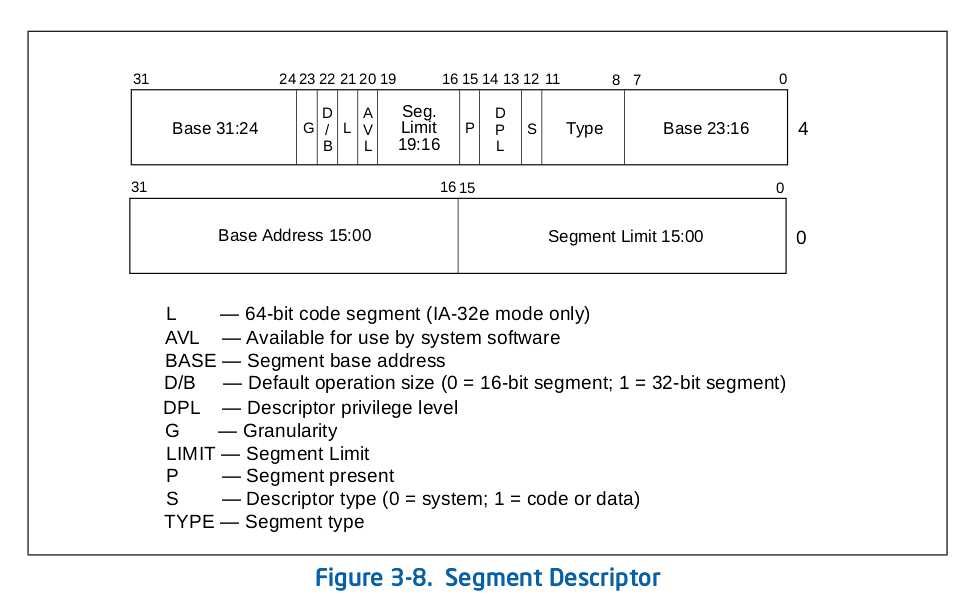
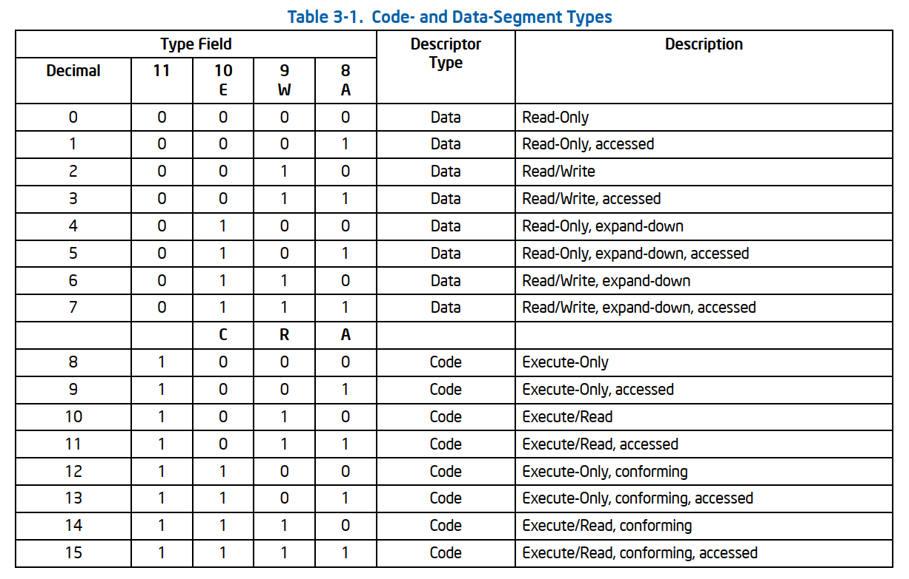
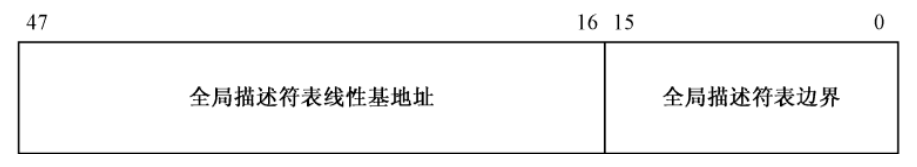
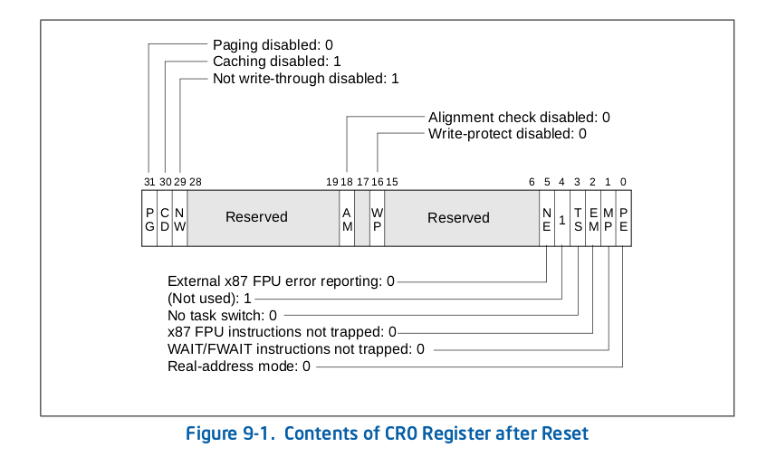
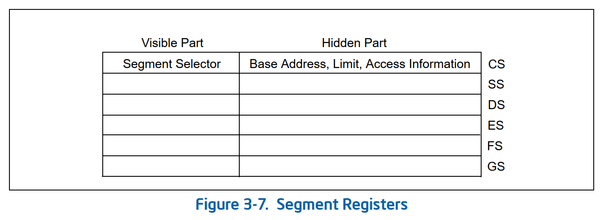
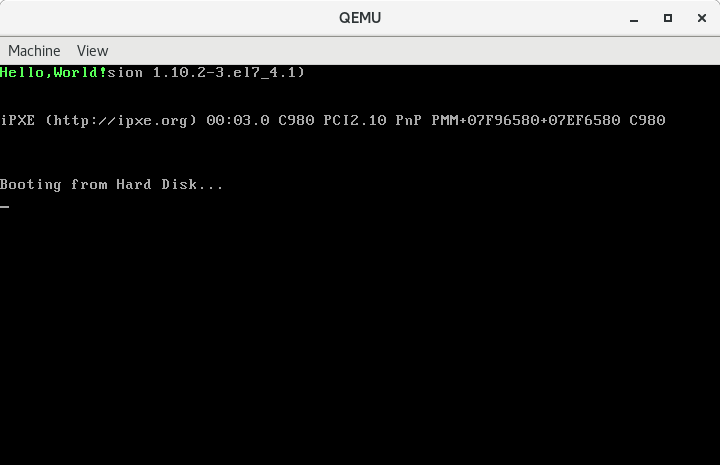
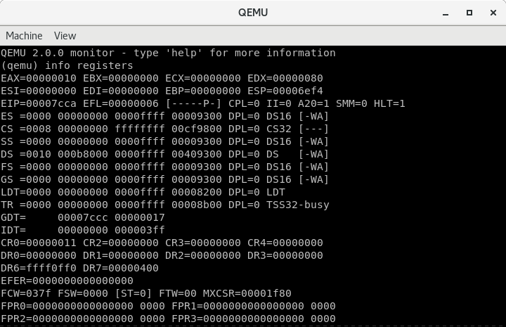

009-进入保护模式
Contents
保护模式其实很简单，就是概念比较多，本就就跟大家一起讨论一下如何进入保护模式。
进入保护模式
进入保护模式总共分三步。
- 第一步，打开
A20地址线。 - 第二步，加载
GDT。 - 第三步，将处理器切换到
保护模式。
下面我们就来详细讲解一下这三个步骤。
A20 地址线
众所周知，8086处理器有20根地址线，可访问的最大内存地址是0xfffff，即1MB。32位处理器具有32根地址线，可访问的最大内存地址是0xffffffff，即4GB。在32位处理器刚面世的时候并没有太多针对32位处理器开发的软件，更多的是为8086开发的软件，计算机制造商为了能够兼容这些软件，便想出了一个办法，在计算机启动后将第21根地址线，即A20，置为0。这样，当地址超过0xfffff后，由于第21根地址线为0，所以地址又会绕回到0x00000开始。从外表上看就好像是一个16位的处理器。
现在，我们要做的就是打开A20，让处理器可以使用全部的32根地址线。打开A20的方法有很多种，这里我们介绍一种被称为Fast A20 Gate的方法，通过读写0x92端口控制A20的开关。代码如下：
inb $0x92, %al # 读出原数
orb $0x2, %al # 将第`2`位置为`1`
outb %al, $0x92 # 写入数据
这样就打开了A20。
GDT (Global Descriptor Table)
GDT即全局描述符表，GDT中的项被称为段描述符 (Segment Descriptor)。段描述符用于描述内存段，描述符中包含内存段的基地址、段界限和用于访问检测、数据保护的信息，每一个段描述符占据8个字节，每一个字节的图解如下：

可以看到 基地址(base) 和 段界限(limit) 是分散存放的，这是由历史原因造成的。其中基地址共占据32位，即基地址可以起始于4GB内存空间的任何位置，但更好的做法还是选取那些16字节对齐的地址，这样寻址效率更高；段界限共有20位，取值范围为0~0xfffff，用于限制段的扩展范围，这需要和图中所示的G位，即粒度位结合起来使用。G位为0时，段界限以字节为单位，段的扩展范围为1B~1MB。G位为1时，段界限以4KB为单位的，段的扩展范围为4KB~4GB。下面解释一下其余位的含义：
-
D/B位表示默认的操作数大小或默认的堆栈指针大小。为0时表示指令中的偏移地址或者操作数是16位的，相应的指令指针寄存器取ip，堆栈指针寄存器取sp；为1时表示指令中的偏移地址或者操作数是32位的，相应的指令指针寄存器取eip，堆栈指针寄存器取esp。 -
L位是64位代码段标志，我们目前用不到，置0即可。 -
AVL位是留给开发者使用的，置位还是清除就看你的兴趣了。 -
P位即存在位，用于指示描述符所对应的段是否在内存中。当访问不存在的内存段时会触发中断，我们可以在中断处理程序中将不存在的内存段从磁盘中置换到内存中。 -
DPL (Descriptor Privilege Level)用于表示描述符的特权级，占两位，可以表示0，1，2，3四种特权级。0级最高，3级最低。 -
S位表示描述符类型。为1时表示代码段或数据段，为0时表示系统段。 -
TYPE占据四位。其含义根据S位的不同可以分为如下两大类：
当S位置位时，即S位为1时，描述符表示代码段或数据段，TYPE的具体含义如下表：

当S位清除时，即S位为0时，描述符表示系统段，TYPE的具体含义如下表：

表格内容比较多，但是我们现在需要用到的并不多，以后遇到了再逐一讲解。
至此，每一个描述符的含意我们就清楚了。把所有的描述符放在一起就构成了一个描述符表，如果用一个结构(struct)表示一个描述符的话那么很明显，描述符表就是一个结构数组。
每一个描述符需要占据8个字节，显然我们不可能把描述符表全部保存在寄存器中，因为没有那么多的寄存器空间。所以全局描述符表是被放在内存中的，处理器中有一个48位的，专用于保存全局描述符表信息的寄存器 —— 全局描述符表寄存器(GDTR)。其中低16位(0~15)表示GDT的边界，其值为表的长度减一，从0开始计，高32位(16~47)存放GDT在内存中的基地址。图示如下：

一旦准备好了GDT，就可以通过lgdt指令将其描述信息加载到GDTR中，指令格式如下：
lgdt gdtdesc # gdtdesc 是全局描述符表信息在内存中的地址
将处理器切换到保护模式
将处理器从实模式切换到保护模式非常的简单，只须将控制寄存器cr0的PE位置位即可。cr0寄存器每一位的含义如下：

当处理器刚加电时，PE位，即保护模式允许位(Protection Enable)默认为0，表示处理器运行在实模式下，处理器的寻址，计算都按照实模式来。一旦PE位置为1，则处理器立刻切换到保护模式执行。这也意味着，我们必须在将处理器运行模式切换到保护模式之前设置好全局描述符表并开启A20。设置PE位的代码如下：
movl %cr0, %eax
orl $0x1, %eax
movl %eax, %cr0
有了上面的理论知识，下面我们开始实战。
示例
代码
# 分别定义了两个符号，值分别为0x08，0x10
.set PROT_MODE_CSEG, 0x08 # code segment selector
.set PROT_MODE_DSEG, 0x10 # data segment selector
# 定义了一个全局可见的符号start
.global start
start:
# 告诉编译器以16位模式编译，因为BIOS在加载并运行我们的代码时是处于16位实地址模式的
.code16 # 用伪指令.code16告诉汇编器下面的代码按照16位的格式汇编
cli # 用于关闭中断，因为我们还没有设置如何处理保护模式下的中断
# Enable A20
inb $0x92, %al
orb $0x2, %al
outb %al, $0x92
# Load GDT
lgdt gdtdesc
# Switch from real to protected mode
movl %cr0, %eax
orl $0x1, %eax
movl %eax, %cr0
# Jump into 32-bit protected mode
ljmp $PROT_MODE_CSEG, $protcseg # 使用ljmp长跳转指令跳转到保护模式代码段中
.code32 # 伪指令.code32告诉汇编器，之后的指令都按照32位格式编译。
protcseg:
movw $PROT_MODE_DSEG, %ax
movw %ax, %ds
# 向数据段，即显存对应的内存段写入数据以显示字符
movb $'H', 0
movb $0x0a, 1
movb $'e', 2
movb $0x0a, 3
movb $'l', 4
movb $0x0a, 5
movb $'l', 6
movb $0x0a, 7
movb $'o', 8
movb $0x0a, 9
movb $',', 10
movb $0x0a, 11
movb $'W', 12
movb $0x0a, 13
movb $'o', 14
movb $0x0a, 15
movb $'r', 16
movb $0x0a, 17
movb $'l', 18
movb $0x0a, 19
movb $'d', 20
movb $0x0a, 21
movb $'!', 22
movb $0x0a, 23
hlt # hlt使处理器暂停。
.p2align 2 # 伪指令.p2align 2强制4字节对齐。
gdt:
.quad 0x0 # 处理器规定的空描述符。
.quad 0x00cf98000000ffff
.quad 0x0040920b8000ffff
# gdtdesc定义，其中低16位是GDT的长度减一，高32位是GDT的基地址。
gdtdesc:
.word gdtdesc-gdt -1
.long gdt
# .org伪指令指示编译器把位置计数器移动到操作数所指定的位置，这里是将位置计数器移动到510处
.org 510
# .word伪指令指示编译器在当前位置写入一个字大小的数据
.word 0xaa55
实模式下，段寄存器cs、ds、es、ss中保存的是16位的段基地址。保护模式下，段寄存器中保存的就不是段基地址了，而是段选择子，并且每个段寄存器还包含了一个64位的不可见部分，被称为描述符高速缓存器，如下图：

描述符高速缓存器中保存的就是我们在描述符表中定义的段的信息，而段选择子就是用于在描述符表中定位描述符的。段选择子也是16位的，其格式如下：
这16位的信息分为三部分，第0、1位是RPL（请求特权级），表示给出当前选择子的程序的特权级别，用于处理器固件校验权限。第2位是TI位，用于标识所需要的段描述符在GDT还是LDT中，GDT我们之前介绍过，LDT是局部描述符表，和GDT类似。当TI位为0时表示在GDT中取描述符，为1时表示在LDT中取描述符。第3~15位时索引，如果把描述符表看作一个数组的话，这里的索引就相当于数组的下标。因为每个描述符占8个字节，所以处理器拿到索引后先将其乘以8，在以得到的结果为偏移量到描述符表中获取相应的描述符。
以PROT_MODE_CSEG为例，其值为0x08，对应二进制0000000000001_0_00，根据上面的知识就很好理解了。RPL为0，表示最高特权级；TI为0，表示请求的描述符在GDT中；Index为1，1 * 8 = 8，表示该描述符相对于描述符表的基地址偏移量为8，即描述符表中的第二个描述符。为什么不用第一个描述符呢？这是因为Intel规定，全局描述符表中的第一个描述符必须为空描述符，即8个字节全为0，所以我们能使用的描述符只能从第二个开始了。我们将段选择子0x08指向的描述符表示的段做为代码段，其定义在第50行，如下：
.quad 0x00cf98000000ffff
为了简单，在这里我们直接写入了64位的数据。将这64位的数据按照段描述符的格式拆解可得：
Base 31_24: 00G: 1D/B: 1L: 0AVL: 0Limit 19_16: fP: 1DPL: 0S: 1TYPE: 8Base 23_16: 00Base 15_00: 0000Limit 15_00: ffff
整理可得：
Base: 0x00000000Limit: 0xfffffG: 1段界限粒度为4KBD/B: 132位操作数L: 0AVL: 0P: 1对应的段在内存中DPL: 0特权级为0S: 1描述符为代码段或数据段TYPE: 8只执行代码段
其中段界限为0xfffff，粒度为4KB，段界限与粒度相乘可得上限为4GB。基地址为0x0，所以这个描述符表示的范围是全部的4GB内存空间。
第25行，伪指令.code32告诉汇编器，之后的指令都按照32位格式编译。
第27、28行，我们将数据段设置为选择子PROT_MODE_DSEG，值为0x10，对应的描述符定义在第51行，如下：
.quad 0x0040920b8000ffff
拆解可得：
Base: 0x000b8000Limit: 0x0ffffG: 0段界限粒度为1BD/B: 132位操作数L: 0AVL: 0P: 1对应的段在内存中DPL: 0特权级为0S: 1描述符为代码段或数据段TYPE: 2可读可写数据段
基地址0xb8000对应显存的起始地址，段界限0xffff * 1 = 0xffff，即64KB。
编译链接
# as --32 boot.s -o boot.o
# ld -e start -Ttext=0x7c00 -m elf_i386 --oformat binary boot.o -o boot.bin
这次我们使用了链接器ld而不是objcopy制作最终的启动文件。其参数含义如下：
-e指定程序入口点为start，这是我们在代码里导出的符号-T指定代码段(text)的地址为0x7c00-m指定生成i386格式的指令--oformat binary指定生成纯二进制的文件
运行
# qemu-system-i386 boot.bin
此时运行情况如下： 
我们在qemu的控制台上，输入info registers查看寄存器的状态。

观察cs的值为0x08，段基址为0，上限为0xffffffff，属性为0xcf98，与我们设置的一致。
ds的值为0x10，段基址为0xb8000，上限为0xffff，属性为0x4093，与我们设置的有点出入，我们设置的是0x4092，其中2表示可读可写数据段，查表可知3表示已访问过的可读可写数据段。这说明当我们访问这个段时处理器已经将其标记为已访问。
一切水到渠成，简单三步进入保护模式。